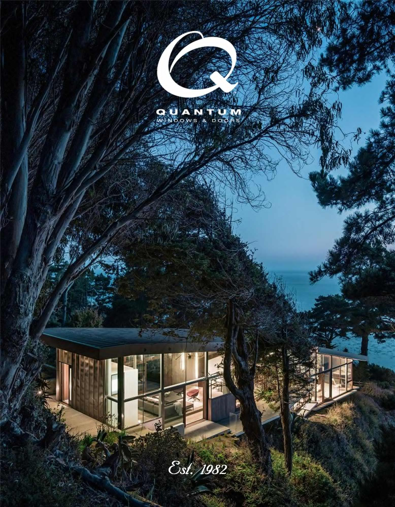

Product Brochure Quantum is a throwback to a time when people "crafted" products and demonstrated a vested interest in their work. From design innovation to fabrication, Quantum takes an amazingly interactive approach to producing some of the best windows and doors in the Northern Hemisphere. Proof can be seen throughout the pages of our new 2016 product brochure. You are welcome to see for yourself. 